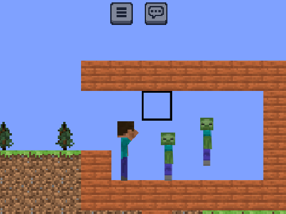

Version 24w30a Changelog
Date: 26-07-2024
It's been a while since the last snapshot, but we're back with 24w30a. This snapshot brings a whole new Menu UI to the game, from a previous project, Entity physics, and some fixed bugs. As always, report any bugs in-game, by clicking the menu button. Lots of under-the-hood changes have taken place, with an adaptation of Misode's Deepslate Library.

Test the latest version Test it!
Additions
- Loading Animation
- Title Screen
- Menu UI
- Options Menu
- Create world menu
- Gamerules selector screen
- (empty) Datapacks screen
- Multiplayer screen (not functional)
- This is currently not implemented fully, so creating anything in the gen screen won't affect anything in-game
- Sound engine (Implemented, but not functioning yet)
- Tags: Unbreakable blocks
- "P" key will reset tiles, as on occasion, they won't create themselves properly
- Pressing "g" will summon a zombie. It will have a 1/10 chance of jumping, and will only jump if in contact with the floor
Changes
- "/" key can now open chat menu too
- Entitites can interact with physics gravity system. They are only rendered and ticked when they are on screen, in the future, I will possibly implement a "simulation distance" system
- Bug report background is opaque
- New Biome system, uses MC's real overworld system to pick biomes
- Improved terrain smoothness
Bugs Fixed
- [MCSE-23] Username doesn't support numbers
- Clone limit would be reached by refreshing title screen too much
- Unbreakable blocks no longer show breaking animations
- [MCSE-12] + [MCSE-19] Water is breakable